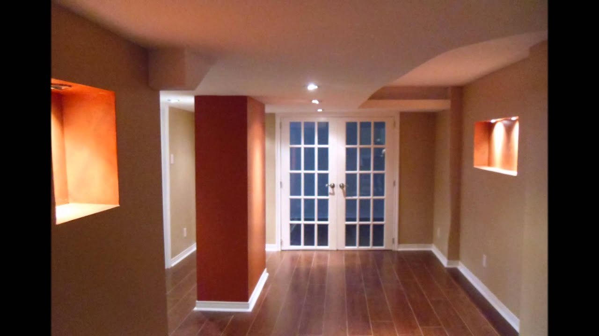
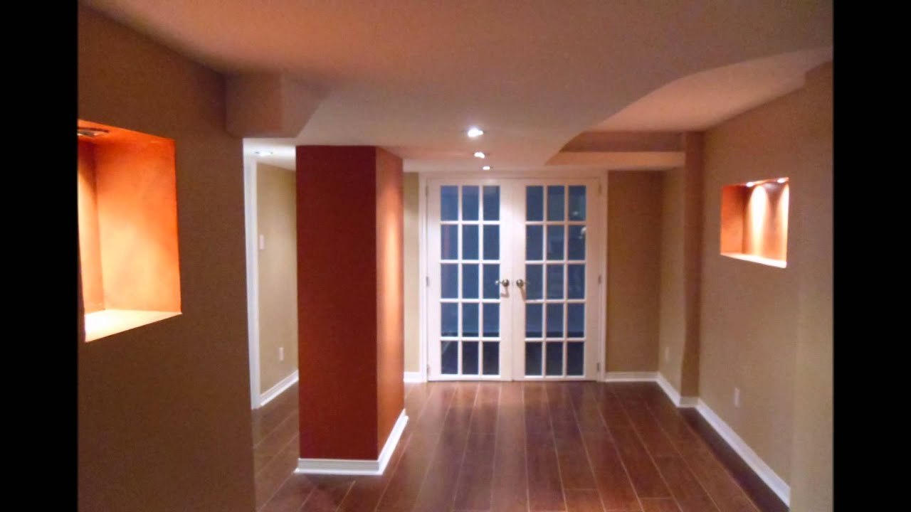

Home - Nazza Interior Design
2020.09.19 18:15

NAZZA
INTERIOR DESIGN IDEAS
Home Design Interior Bucatarie Living Dormitor Camera copiilor Baie Home Tour Design Exterior Gradina Balconul Arhitectura Tech Ultimele colectii Lifestyle About Home Design Interior Bucatarie Living Dormitor Camera copiilor Baie Home Tour Design Exterior Gradina Balconul Arhitectura Tech Ultimele colectii Lifestyle AboutNAZZA
INTERIOR DESIGN IDEASCanapeaua si regulile de plasare a mobilierului in living
Declutter your home: Cum sa scapi de lucrurile inutile din casa?
Ce sa faci cand te plictisesti? 20 de Proiecte Gratuite in vreme de Coronavirus
Leroy Merlin a decis sa inchida temporar toate magazinele din Romania
Renovarea Apartamentului Nana, Lisabona
IFA 2019 TOP 5 INOVATII SMART HOME
Apartament de burlacita in fascinantul Singapore
Apartamentul Minimalist
Apartamentul Lumiere
Design Interior: Casa de Familie
Tendinte in amenajarea bailor in 2019
Decoreaza gradina cu ghirlande luminoase
Amenajare apartament modern Interviu Maria Novikova
Design de apartament cu Roman Lysenko
5 Sfaturi pentru o bucatarie actuala
Colectarea selectiva a deseurilor
Culorile in designul interior
Culorile, notiuni de baza
Load moreFollow me on instagram
View on Instagramfollow me on social media
© nazzainteriordesign 2019
instanazza@gmail.com
- Designeri de Interior Bucuresti - Apartamente, Case - Vile
- Home - Georgiana Ursache Interiors
- Home - Nazza Interior Design
- Category:Corvin Castle, interior - Wikimedia Commons
- Design Interior
- Usi de interior - MatHaus by Arabesque
- UȘI IEFTINE BRAȘOV: MODELE USI INTERIOR
- Design Interior | Adela Pârvu - Interior design blogger
- Usa intrare, usi lemn, producator usi - Porta Doors
- Firme design interior, amenajari interioare, arhitectura ...
- Designeri de Interior Bucuresti - Apartamente, Case - Vile
La Leroy Merlin ai o gama variata de usi de interior, potrivite pentru orice tip de locuinta. Primesti consultanta gratuita. Preturi inegalabile. Afla info!
- Home - Georgiana Ursache Interiors
INTERIOR DESIGN IDEAS Canapeaua si regulile de plasare a mobilierului in living. Declutter your home: Cum sa scapi de lucrurile inutile din casa? Ce sa faci cand te plictisesti? 20 de Proiecte Gratuite in vreme de Coronavirus. Leroy Merlin a decis sa inchida temporar toate magazinele din Romania.
- Home - Nazza Interior Design
Pardoseala teraselor este tratată tot cu microciment, ca atare, de la interior pare că totul se prelungește către grădină, finisajul de la nivel inferior fiind practic același.De asemenea, țesăturile decorative, dar și stilul pieselor de mobilier sunt similare celor de la interior, tocmai pentru ca întreaga amenajare să fie armonioasă.
- Category:Corvin Castle, interior - Wikimedia Commons
Cea mai frumoasa casa: Proiect cu planuri si poze din interior-exterior. 2020-08-26. Acum nu poti sa spui ca am exagerat cu titlul! Nu-i asa ca acest proiect iti prezinta o splendoare de casa P+M ? Daca ar fi sa ii dau o nota i-as da nota zece cu felicitari pentru ca am foarte multe motive.
- Design Interior
- For Non Flash Site Please Click Here - R I C H A R D H A L L B E R G I N T E R I O R D E S I G N ( 3 1 0 ) 6 5 9 3 5 3 1 © 2 0 1 0 R I C H A R D H A L L B E R G I ...
- Usi de interior - MatHaus by Arabesque
Un interior luminos, cu accente de culoare, care imi da energie si ma binedispune. Prietenii adora sa vina la mine. Ada Bucur. Sa lucram alaturi de "interior" pentru amenajarea apartamentului nostru a fost, probabil, cea mai buna decizie pe care o puteam lua. Echipa de designeri ne-a ajutat cu foarte multa rabdare sa ne coordonam ideile si ...
- UȘI IEFTINE BRAȘOV: MODELE USI INTERIOR
Uși de interior NEW FOREST , Parchet laminat diferite grosimi , preturi corecte - MONTAJ USI INTERIOR si EXTERIOR !!! Preturi de criza ! Brasov,Str. SCOLII ( COLT CU STRADA DE MIJLOC ) , Romania
- Design Interior | Adela Pârvu - Interior design blogger
Producator usi Porta. Oferta Porta Doors mai cuprinde usa intrare, usi lemn, usi antifurt, usi din metal, usi cu sticla si usi de exterior.
- Usa intrare, usi lemn, producator usi - Porta Doors
Servicii firme design interior cu peste 300 de companii in domeniul design interior,amenajari interioare,arhitectura interior,proiectare interioare,
- Firme design interior, amenajari interioare, arhitectura ...
Design Interior Categorie. Case, Design Interior. 16 aprilie 2020 . Interior rustic cu atmosferă calmă ...
La Leroy Merlin ai o gama variata de usi de interior, potrivite pentru orice tip de locuinta. Primesti consultanta gratuita. Preturi inegalabile. Afla info!
INTERIOR DESIGN IDEAS Canapeaua si regulile de plasare a mobilierului in living. Declutter your home: Cum sa scapi de lucrurile inutile din casa? Ce sa faci cand te plictisesti? 20 de Proiecte Gratuite in vreme de Coronavirus. Leroy Merlin a decis sa inchida temporar toate magazinele din Romania.
Pardoseala teraselor este tratată tot cu microciment, ca atare, de la interior pare că totul se prelungește către grădină, finisajul de la nivel inferior fiind practic același.De asemenea, țesăturile decorative, dar și stilul pieselor de mobilier sunt similare celor de la interior, tocmai pentru ca întreaga amenajare să fie armonioasă.
Cea mai frumoasa casa: Proiect cu planuri si poze din interior-exterior. 2020-08-26. Acum nu poti sa spui ca am exagerat cu titlul! Nu-i asa ca acest proiect iti prezinta o splendoare de casa P+M ? Daca ar fi sa ii dau o nota i-as da nota zece cu felicitari pentru ca am foarte multe motive.
- For Non Flash Site Please Click Here - R I C H A R D H A L L B E R G I N T E R I O R D E S I G N ( 3 1 0 ) 6 5 9 3 5 3 1 © 2 0 1 0 R I C H A R D H A L L B E R G I ...
Un interior luminos, cu accente de culoare, care imi da energie si ma binedispune. Prietenii adora sa vina la mine. Ada Bucur. Sa lucram alaturi de "interior" pentru amenajarea apartamentului nostru a fost, probabil, cea mai buna decizie pe care o puteam lua. Echipa de designeri ne-a ajutat cu foarte multa rabdare sa ne coordonam ideile si ...
Uși de interior NEW FOREST , Parchet laminat diferite grosimi , preturi corecte - MONTAJ USI INTERIOR si EXTERIOR !!! Preturi de criza ! Brasov,Str. SCOLII ( COLT CU STRADA DE MIJLOC ) , Romania
Producator usi Porta. Oferta Porta Doors mai cuprinde usa intrare, usi lemn, usi antifurt, usi din metal, usi cu sticla si usi de exterior.
Servicii firme design interior cu peste 300 de companii in domeniul design interior,amenajari interioare,arhitectura interior,proiectare interioare,
Design Interior Categorie. Case, Design Interior. 16 aprilie 2020 . Interior rustic cu atmosferă calmă ...
 
